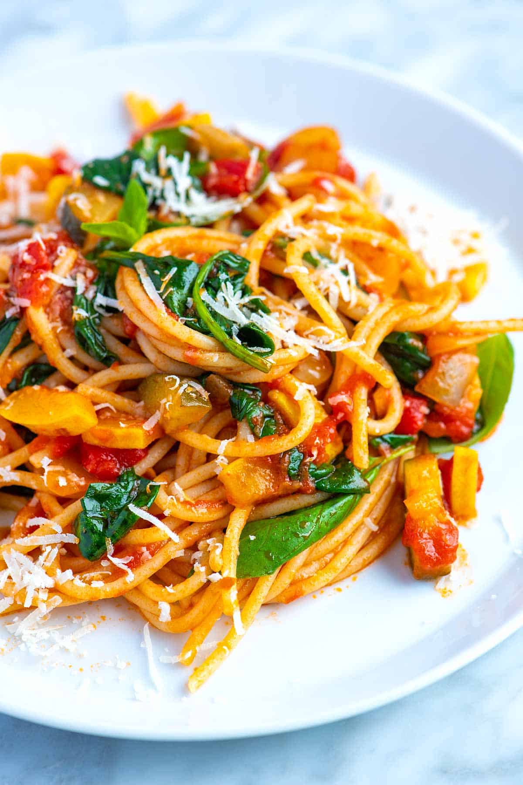

Spaghetti

Meatless Spaghetti Recipe
Here is how to make the perfect vegetarian spaghetti. You won't miss the meat.
Ingredients
- 1 small onion
- 1 small zucchini
- 2 cloves garlic
- 1 canned lentil
- your favorite tomato sauce
- packaged spaghetti
- fresh parsley
- salt and pepper
Steps
- Add pasta to boiling water. Cook until al dente.
- Chop up onion and zucchini and mince garlic.
- Cook veggies until brown/tender. Add minced garlic.
- Drain and add lentils to pot.
- Add tomato sauce.
- Season with salt and pepper. Add parsley at end.
Home